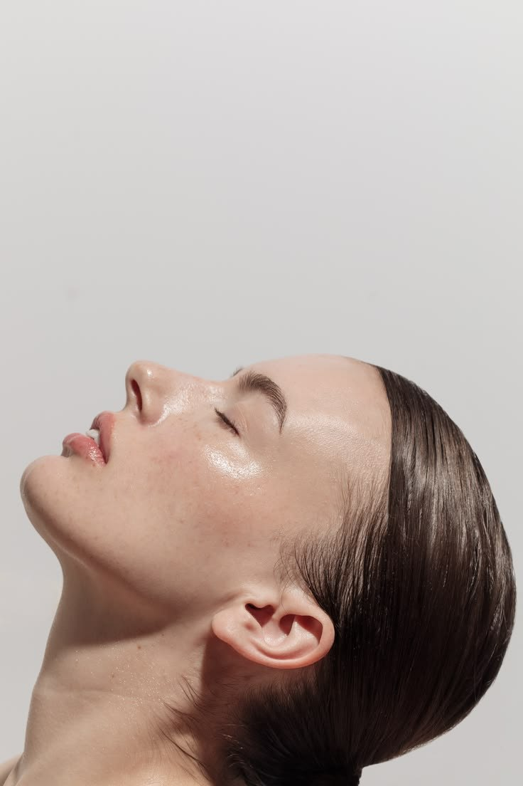
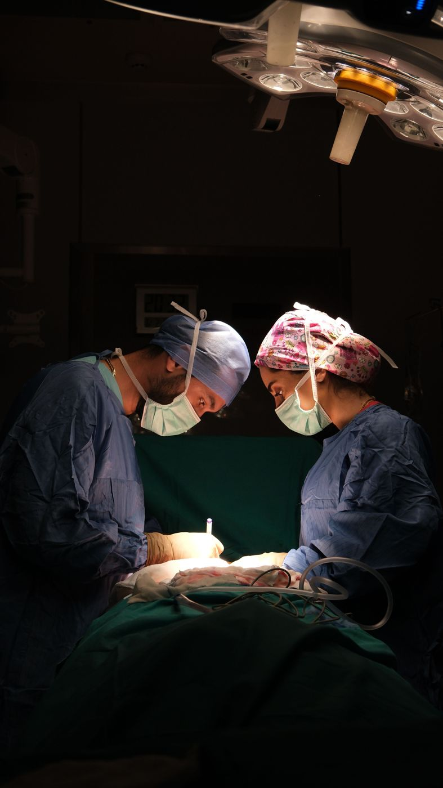

Twelve questions to ask any surgeon before you book
From register checks to who manages complications at 2am. Bring this list to every consultation, including ours.
Breast, body & facial surgery · London
Mr Rohan Sethi is a consultant plastic surgeon on the GMC Specialist Register. Every patient meets him twice before a surgery date is discussed. Some decide not to go ahead, and that’s a good outcome too.

Your first consultation is with Mr Sethi himself and lasts around 45 minutes. He takes your history, examines you and is honest about what surgery can and can’t do.
We ask every patient to take at least two weeks between consultations. You leave with written information on risks, recovery and costs, and a direct line for questions.
Follow-up appointments for the first year are included in your fee, and you’ll always know who to call, day or night, while you recover.
“Most of my consultations end with a plan. Some end with me suggesting you don’t need surgery at all. Both are good outcomes.”
Mr Sethi trained in plastic and reconstructive surgery in London and has been a consultant since 2013. Alongside his private practice, he holds an NHS consultant post, where much of his work is reconstruction after cancer and injury. That background shapes how he approaches cosmetic surgery: carefully, and with the long term in mind.
He grew up in Leicester and consults in English, Hindi and Punjabi. Many patients bring a family member to their first appointment, and they’re always welcome.
Every entry links to a public register. We’d encourage you to check any surgeon you’re considering, including this one.
What each procedure involves, how long you’re likely to stay in hospital and when most people are back at a desk. Your own plan is set out in writing after examination.

Fees include hospital and anaesthetist costs. Recovery times are typical ranges only. Your own risks, recovery and total fee are confirmed in writing after your first consultation.
From first enquiry to your final review, you’ll know what happens next and who to speak to.
A short form or a call. Our patient coordinator explains fees and arranges your first appointment.
Within 2 working days45 minutes with Mr Sethi: history, examination, honest advice and written information to take away.
About 45 minutesRead, think and talk to the people you trust. Questions are answered by email or phone, and there’s no pressure to book.
At least 14 daysYour plan, risks and consent form are reviewed together. Only now is a surgery date discussed.
About 30 minutesAt a CQC-registered hospital, with a consultant anaesthetist and a dedicated nursing team.
Your chosen dateWound checks, review appointments and a 24-hour line, all included for the first year.
12 monthsNo headline prices that grow later, no offers and no deadlines. You’ll have a single, all-inclusive quote before any date is set.
£250
Around 45 minutes with Mr Sethi. Deducted from your surgery fee if you go ahead.
Included
Your plan, consent and any remaining questions, at no extra cost.
Your quote is personal to you and confirmed in writing after your first consultation. It covers:
A deposit secures your surgery date, with the balance due two weeks beforehand. Cancellation terms are explained in writing before you pay anything.
Average rating from 120+ reviews on an independent review platform.
Every review is published by the platform, not by us.
“He spent the whole first appointment listening. I never once felt sold to, and he was honest when I asked about the risks.”
“I brought my mum to both consultations and he explained everything to her in Punjabi. That meant a lot to both of us.”
“The two weeks between consultations felt long at the time. Looking back, it’s why I felt so sure.”
Illustrative reviews and rating for this concept site. On a live site, reviews are shown with permission and link to their independent source.

Results photos only mean something next to your own anatomy, history and goals. Shown on their own, they can set expectations no surgeon can honestly promise.
With patients’ written consent, Mr Sethi shares relevant, unedited photographs during your consultation, alongside a frank conversation about the range of outcomes.
Plain-English guides, written with our nursing team. Printed copies are given at your first consultation.
From register checks to who manages complications at 2am. Bring this list to every consultation, including ours.

Who keeps you safe while you’re asleep, and why it’s worth asking who yours will be.

Swelling, sleep, showering and when you’ll feel like yourself again.
Tell us a little about what you’re considering. Our patient coordinator will reply within two working days to explain fees and availability. There’s no obligation at any stage.
Consultations are for adults aged 18 and over.